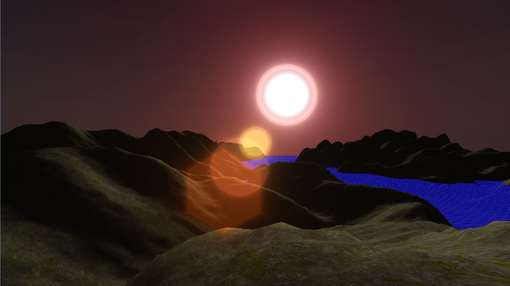
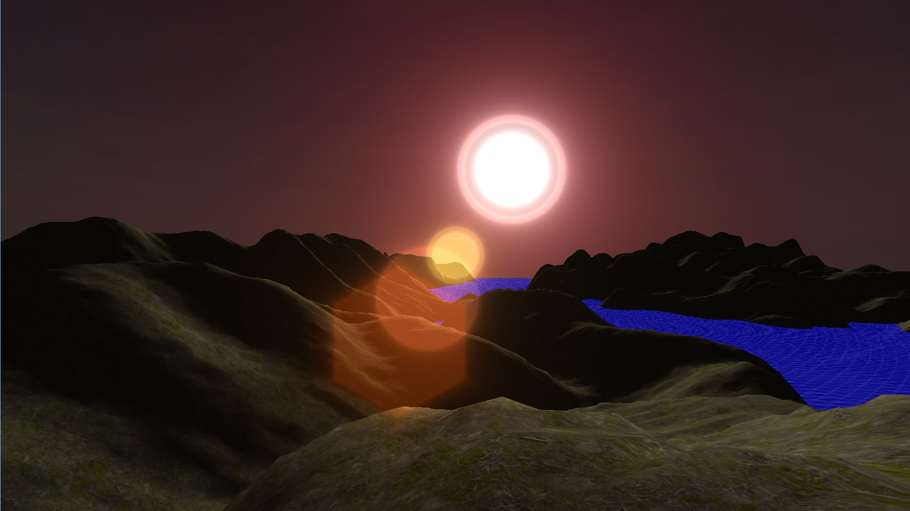

Aspect
Overview
Description: Aspect is a Java game engine that I made throughout my time in high school. While working on this project, I taught OpenGL and various other topics necessary for engine programming. While this project began as a simple wrapper for common operations in OpenGL, I continued adding features, creating a much more featured game engine. Due to the fact that this was primarily a learning project for me, some parts of the engine are more functional than others. However, I have been able to use the engine to produce several interesting demos and the beginnings of a game, which I later ported over to Unity. The main features of the engine are:
- 3D collision detection with oriented convex mesh colliders
- Rigid body physics, including elasticity and friction
- OBJ mesh loading and rendering
- GLSL shaders for both vertex and fragment based lighting
- Spacial audio using OpenAL
- GUI including buttons, text boxes, panels, layout management
- Component-oriented programming, similar to Unity
- Spacial object management using octrees
- Resource management (materials, textures, meshes, sounds)
- The beginnings of a level editor
Links:
- Source: Git repository
Team: This was a solo project.
Technologies Used:
- Java 8
- OpenGL via LWJGL
- OpenAL via LWJGL
- Nashorn (JavaScript runtime)


 
